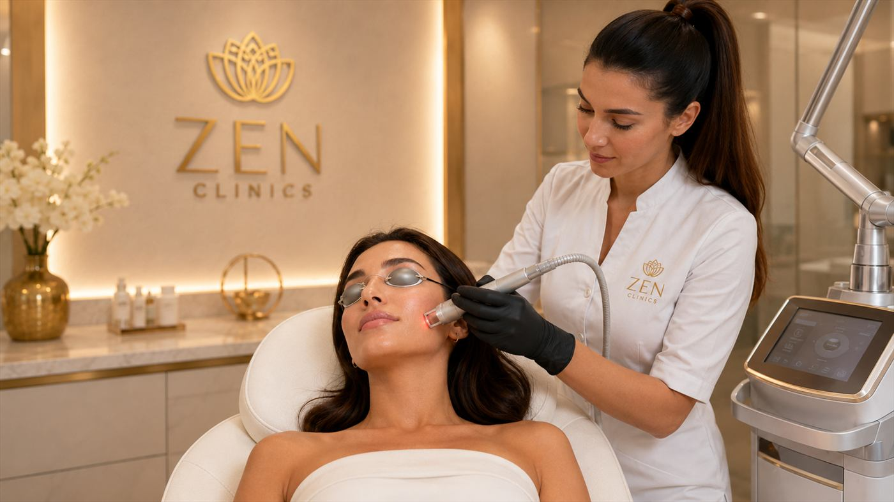

Hemoroizi și fisuri anale
Evaluare, tratament local sau bandare hemoroidală, în funcție de diagnostic și severitate.
Chirurgie generală
Departamentul de Chirurgie generală ZEN Clinics reunește consultații, proceduri minim invazive și intervenții chirurgicale într-un parcurs clar: evaluare, indicație medicală, pregătire, tratament și recuperare urmărită responsabil.
Proces medical
Chirurgia generală este o ramură medicală complexă, care implică anatomie, fiziologie, metabolism, imunologie, nutriție, patologie, resuscitare, terapie intensivă și evaluarea afecțiunilor oncologice. Aceste repere stau la baza unei decizii medicale corecte.
În consultație se discută dacă este momentul potrivit pentru intervenție, ce presupune procedura, ce se întâmplă în timpul și după tratament, care sunt riscurile și cum poate fi susținută recuperarea. Direcțiile de mai jos sunt orientative, iar indicația finală se stabilește individual.
Chirurgie generală
Pagina este structurată în două trasee clare: proceduri minim invazive și intervenții chirurgicale, fiecare cu carduri rapide pentru orientare.
Minim invazive
Zona minim invazivă reunește injectări estetice și proceduri de cabinet care pot fi realizate doar după evaluare. Doza, tehnica, indicația și recomandările post-procedură se stabilesc individual.
Proceduri de cabinet
Procedurile minim invazive se pot realiza în spații medicale adecvate intervențiilor de tip one day procedures, cu monitorizare și recomandări clare după tratament.
Evaluare, tratament local sau bandare hemoroidală, în funcție de diagnostic și severitate.
Excizii cu anestezie locală pentru formațiuni de țesut celular subcutanat, atunci când medicul indică procedura.
Îngrijirea plăgilor, suturi pentru leziuni mici și monitorizarea evoluției locale.
Procedură realizată doar în context medical adecvat, după evaluarea indicației.
Protocol adjuvant discutat individual pentru susținerea procesului de vindecare.
Chirurgie
Intervențiile se recomandă numai după consultație, investigații și stabilirea indicației medicale. Fiecare card de mai jos trimite către formular cu ramura și interesul completate pentru o programare mai rapidă.
 HerniiHiatală, inghinală, ombilicală sau incizională
HerniiHiatală, inghinală, ombilicală sau incizională
 ColecistectomieVezică biliară și căi biliare
ColecistectomieVezică biliară și căi biliare
 ApendicectomieAbord stabilit în funcție de caz
ApendicectomieAbord stabilit în funcție de caz
 Chirurgie colorectalăIntestin subțire, colon și afecțiuni inflamatorii
Chirurgie colorectalăIntestin subțire, colon și afecțiuni inflamatorii

Chirurgie endocrinăTiroidă, gușă și indicații endocrine Varice și flebectomieProceduri ambulatorii pentru vene varicoase
Varice și flebectomieProceduri ambulatorii pentru vene varicoase
 Chirurgia sânuluiAbces mamar și formațiuni benigne
Chirurgia sânuluiAbces mamar și formațiuni benigne
 Chisturi și lipoameFormațiuni subcutanate evaluate medical
Hemoroizi și fisuriTratament local adaptat severității
Chisturi și lipoameFormațiuni subcutanate evaluate medical
Hemoroizi și fisuriTratament local adaptat severității
 Traumatisme și plăgiSuturi, îngrijire locală și monitorizare
Biopsii specificePărți moi, mamară, ganglionară sau tiroidiană
Traumatisme și plăgiSuturi, îngrijire locală și monitorizare
Biopsii specificePărți moi, mamară, ganglionară sau tiroidiană
În cadrul ZEN Clinics, abordarea medicală urmărește utilizarea metodelor moderne și a tehnicilor minim invazive ori de câte ori acestea sunt potrivite pentru pacient. Scopul este reducerea riscurilor, limitarea disconfortului și susținerea unei recuperări mai rapide.
Pacienții beneficiază de îngrijire medicală într-un mediu calm, cu sprijin din partea unei echipe orientate către tratament specializat, atenție și empatie. Atunci când este necesar, medicii din diferite specialități pot colabora pentru evaluare, diagnostic și tratament.
Procedurile pot implica, în funcție de indicație, endoscopie, chirurgie laparoscopică, termocoagulare cu plasmă, monitorizare a semnelor vitale, echipamente de unică folosință și masă chirurgicală. Alegerea tehnicii se face strict în funcție de cazul medical.
Dacă ai nevoie de evaluare, diagnostic sau tratament pentru o afecțiune cu posibilă indicație chirurgicală, echipa ZEN Clinics îți poate oferi suport medical specializat în cadrul departamentului de Chirurgie generală.
Programare
Evaluarea stabilește indicația, alternativele, pregătirea și pașii de recuperare. Pentru intervenții, costul se confirmă individual, în funcție de complexitate și planul medical.
Trimite solicitarea